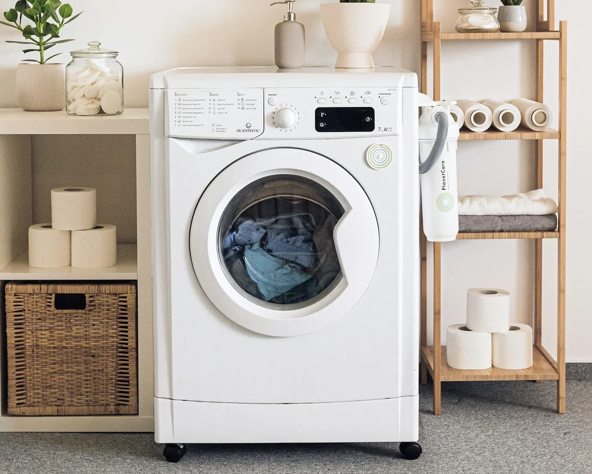

Availability checks
The city and equipment are reviewed before a visit is arranged.

Washing machine repair in Treasure Valley, including front-load, top-load, high-efficiency and stacked installations. Drainage, spin, leaks, vibration and control problems. Independent-provider availability and model suitability are confirmed before a visit.
Local design preview · requests are not sent
A straightforward start to your appliance repair request.
The city and equipment are reviewed before a visit is arranged.
Built-in, freestanding and specialist configurations.
Premium equipment and everyday household models.
The appliance and symptom guide the diagnostic visit.
Boise, Nampa and Caldwell, plus proposed neighboring cities.
Discuss the findings and proposed work before approving a repair.
A focused assessment starts with the symptom, the model and the installation.

The controls do not respond or a cycle will not begin.
Water remains in the drum or the machine stops before draining.
Water appears at the door, dispenser or floor during a cycle.
The washer shakes or moves more than usual during a cycle.
The drum does not reach the expected spin stage.
A code or flashing indicator interrupts normal operation.
Odors return around the drum, dispenser or door seal.
Grinding, banging or rattling is new or has become louder.
The door or lid does not latch normally and the cycle cannot proceed.
Built-in, freestanding and specialized configurations, with model-specific assessment.
Independent repair service. Brand names identify the equipment.
Useful observations and details to gather before the assessment.
Standing water and wet laundry are different observations. Note whether water is actually left in the drum or the load is simply wetter than usual.
Read the guide WASHERWet laundry may follow a skipped spin, a stopped cycle or a low-spin setting. Describe which you observe.
Read the guide WASHERThe location and cycle stage of a leak help explain it. Avoid running another load just to reproduce the problem.
Read the guideBoise, Nampa and Caldwell, plus proposed neighboring cities.
City names identify request areas, not confirmed technician coverage. Every visit requires an availability check.
A diagnosis comes before choosing parts or repair work.
Check the model, installation, controls and the symptom you described.
Inspect and test the relevant components using the procedure for that appliance.
Discuss the findings, proposed repair and parts requirements before work proceeds.
Useful answers before you start a request.
No. Tell us what you observe in plain language. Diagnosis, proposed parts and repair terms should come from the provider after an assessment.
Name the selected cycle and the stage where it changes or stops. Mention whether the display stays on, water remains or an exact error code appears.
Yes. A stacked unit or cabinet installation can affect access. Mention it early so the provider can discuss suitability and access arrangements before a visit.
We service Top-loading washers, Front-loading washers, High-efficiency washers, Stacked laundry combinations, Portable and compact washers, Connected and smart washers. The brand and exact model help plan the assessment.
Have another question?
Start with your city, the appliance and a short description of the problem.
Request Appliance ServiceKitchen & laundry appliances · Treasure Valley · Availability checked first